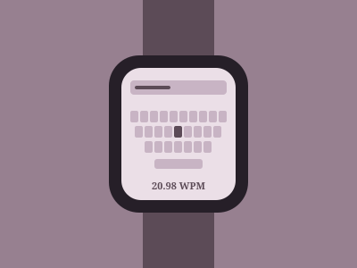

Design Change Challenge · Bakeoff 3
Tiny Typing
Typing on a keyboard the size of an Apple Watch face. Across two rounds of prototyping and testing, our team raised typing speed from 2.34 to 20.98 words per minute.

The challenge
We were given a working but very slow version of a keyboard on a screen the size of an apple watch. Users had to type phrases as quickly and accurately as possible, and the measurement for scores was words per minute with a penalty for errors. The starter code averaged just 2.34 WPM.
The constraint was the screen: every key competes for a few millimeters of space, so there's a constant trade-off between showing more letters and making each one easy to hit.
Ideation
We generated a wide range of concepts before building anything, including:
- Row swipe
- Full keyboard
- Word prediction
- Swipe-to-type
- Half keyboard with toggle
- Alphabetical split
- QWERTY split
- Letter wheel
- Color feedback
- Key zoom
- Handwriting input
- Edge magnification
- Auto-space
Concepts I prototyped
Each team member built their own prototype. I built two split-keyboard variants: one dividing the alphabet in half (a–m / n–z) and one splitting a standard QWERTY layout into left and right halves, each shown one half at a time so the keys could be larger.
Testing & iteration
We tested the first round of prototypes with 8 people and averaged their WPM with penalty, then refined the most promising ideas and tested again.
Average words per minute with error penalty. Round 1 was averaged across 8 testers.
Round 2 refinements
- Half Keyboard + Swipe built on my QWERTY split, replacing the toggle button with a swipe between halves.
- Full + Color flashed the tapped key green when correct and red when wrong, with more responsive taps.
- Full + Dictionary added word suggestions with better spacing for the top three picks.
Testers found swiping between halves slower than just having every key visible, and the half layout felt less intuitive. The dictionary helped in principle but its constantly shifting suggestions added cognitive load, and the large word list strained the hardware.
Outcome
We shipped the full keyboard with color feedback. Instant green/red feedback let people catch mistakes without slowing down, and keeping every key on screen removed the time spent switching layouts.
Reflection
Key takeaway
On a tiny screen, every extra step (toggling, swiping, scanning suggestions) costs more than it saves. Familiarity and immediate feedback beat cleverness.